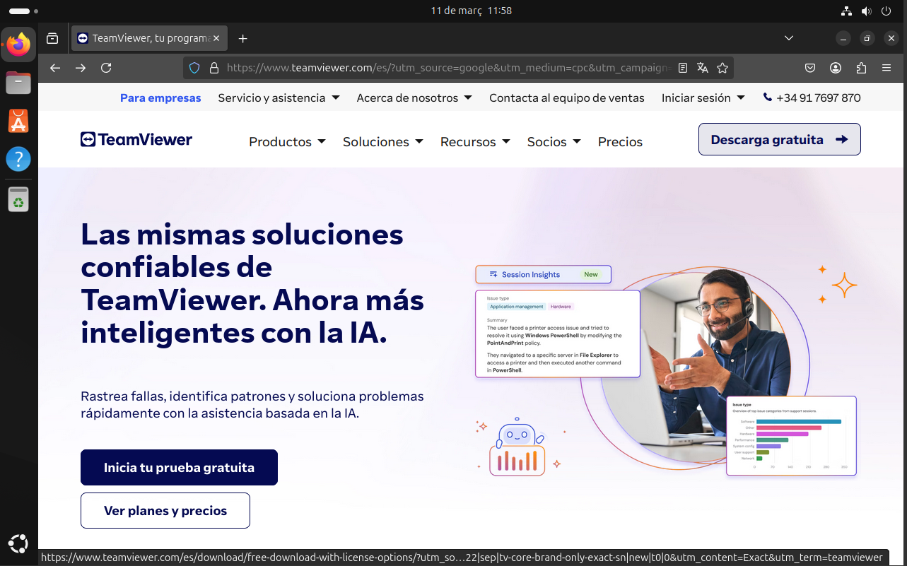
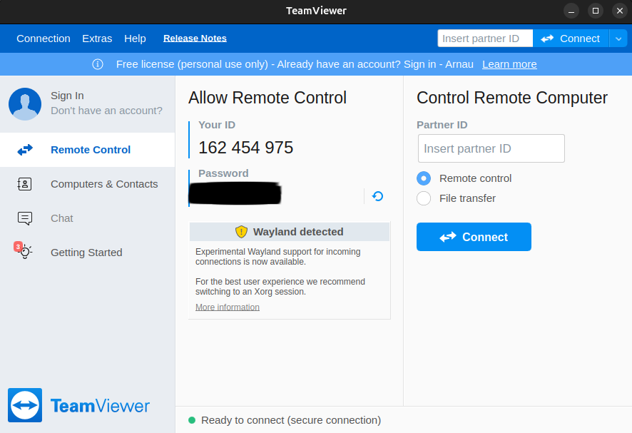
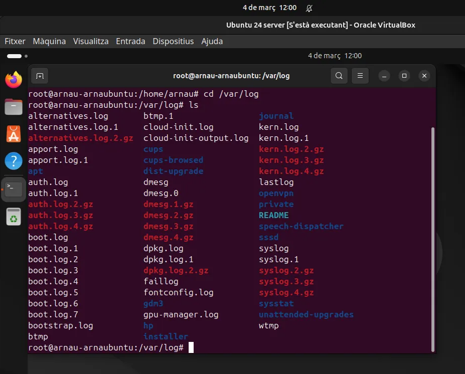
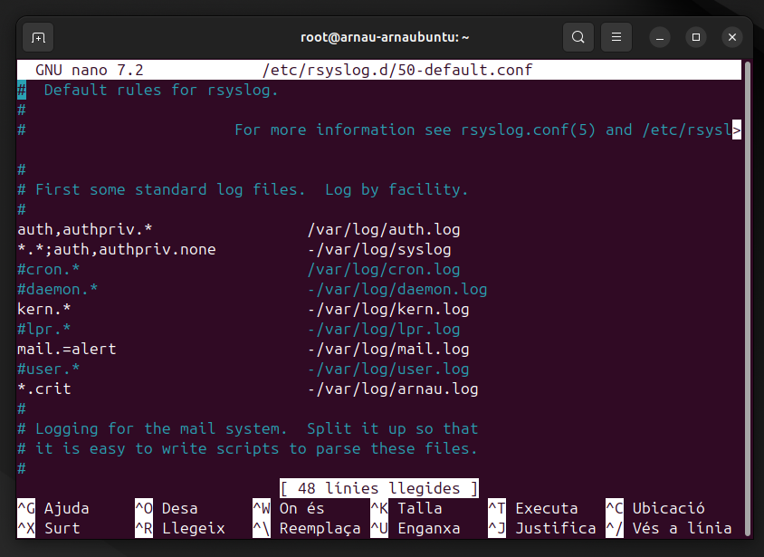
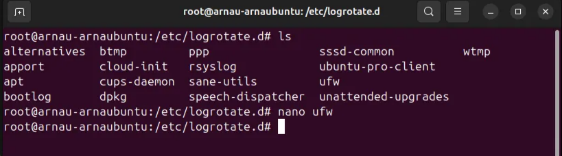

Sprint 4: Monitorització, connexió remota i llicenciament¶
Gestionar un equip en diferent xarxa (amb Team Viewer)¶
El primer pas serà descarregar Team viewer desde la seva pàgina oficial.



Quan haguem acceptat totes les condicions, arribarem a la pàgina principal.
Nota: és necessari que els dos equips tinguin TeamViewer per utilitzar el servei.

Abans de procedir, haurem de crear i verificar un compte (o utilitzar-ne un del que disposem) per motius de seguretat de l’aplicació.

Ara només necessitem repetir el procés amb l’equip al que volem conectar-nos. Un cop situats tots dos en la pàgina principal, introduirem l’ID de l’equip que volem controlar remotament al recuadre “Insert partner ID” de l’equip que volem usar per controlar-lo.

Per últim ens demanarà la contrasenya per de l’equip al que ens volem conectar.
Nota: en l’imatge de la pantalla principal, és el camp tapat en negre. Sempre està al descobert així que s’ha d’anar amb cura.

Ara ja ens hem conectat a la maquina virtual amb la màquina principal i la podem controlar des de qualsevol lloc.

Conclusió¶
Això, en escència, permet controlar equips de forma remota a qualsevol distància. Les aplicacions son molt diverses, tant per ús personal amb algun amic/familiar com per ús professional amb algun empleat o company de feina.
Tot i així pot esdevenir una eina molt perillosa si es filtren les credencials, així que s’ha de tenir compte i evitar donar-les a qualsevol que les demani.
Logs del sistema i aplicacions¶
Per monitoritzar un sistema ubuntu sutilitzen usn fitxers anomenats “logs”, hi ha propis del os i hi ha apps que tenen els seus propis, nosaltres establirem interpretacions de logs per fer proves amb aquests .
Quan parlem de logs hi ha diversos tipus, segons l’aplicació, servei… en aquesta pràctica veurem com modificar les interpretacions del sistema aconseguint així diverses “interaccions” entre els diferents logs.
Aquesta és la jerarquia que segueixen els logs segons el nivell d’alerta.
| 0 | Emergency |
|---|---|
| 1 | Alert |
| 2 | Critical |
| 3 | Error |
| 4 | Warning |
| 5 | Notice |
| 6 | Informational |
| 7 | Debug |
A la ruta /var/log es mostren tots els logs que es generen automàticament pel sistema i algunes instal·lacions. Tot i així cal destacar que no tenen per que estar situats aquí i poden haver-hi més en altres directoris del sistema.

En el fitxer /etc/rsyslog.d/50-defaul.conf podem modificar les interpretacions per tal de decidir quins logs es mostren (o no) al seu fitxer assignat corresponent.

Important: Si modifiquem el fixter, hem de reiniciar tabmé el servei dels logs amb systemctl restart rsyslog . Si no, els canvis no s’aplicaran fins que reiniciem el sistema, cosa que pot portar problemes i confusió. Rebrem un avís, però és normal podem ignorar-lo.

Proves amb logs¶
En la pròxima imatge veurem com fem un logger -p auth.info "logger fictici". Aquesta comanda serveix per generar una entrada inventada amb les característiques especificades, en aquest cas de tipus auth.info.
Amb això podem comprovar si la interpretació que hem especificat serveix per mostrar o amagar els logs en qüestió, cosa que comprovarem després al fitxer on aquesta interpretació estigui especificada.
La terminal de baix mostra TOTS els logs, amb l’objectiu de verificar que no hi ha hagut cap error i que el log ha funcionat correctament independentment de la prova que vulguem fer.

De moment no hem especficicat cap interpretació. Per defecte, el log que hem creat hauria d’aparèixer al fitxer /var/log/auth.log , podem comprovar-ho amb un tail -1 auth.log.

Ara establirem una interpretació al mateix fitxer per tal que només llegeixi logs de nivell 2 cap a dalt (Nivell alerta entre 2 i 0 inclosos).
Per fer-ho, hem modificat la linia superior de la imatge, que fa referència a les interpretacions del fitxer auth.log.
Abans:

auth,authpriv.*
Ara:

auth,authpriv.crit
Com podem veure, el resultat no és el log que hem especificat, ja que aquest és de nivell 6 i el fitxer no el registra.

I si ens fixem amb el fitxer /var/log/syslog amb un tail -f , podem veure com si es registra.

Rotació de logs¶
Per últim tenim la rotació de logs. La rotació de logs és un procés automàtic que arxiva, esborra o comprimeix els logs antics per evitar que ocupin massa espai al sistema.
Hi ha una configuració predeterminada que gestiona automàticament els logs per tal que no ocupin massa espai, es troba al directori /etc/logrotate.d .

“journalctl”¶
La comanda journalctl serveix per revisar logs. És cert que es pot utilitzar un cat sobre un fitxer.log específic per obtenir un resultat semblant i vàlid, però fer servir journalctl per consultar els logs del sistema té diversos avantatges respecte a fer un cat directament als fitxers:
1. Centralització dels logs¶
journalctlconsulta el systemd journal, que unifica logs de diferents serveis i components del sistema en un sol lloc (/var/log/journal).

- En canvi,
catnomés mostra el contingut d’un únic fitxer de log, per la qual cosa has de saber exactament quin fitxer vols revisar.
2. Filtres¶
journalctlpermet aplicar filtres per servei (u), nivell de gravetat (p), rang de temps (-sincei-until), PID, i molt més.- Amb
cat, hauries d’usargrep,awk, o altres eines per filtrar manualment.
Per exemple, si volem veure els logs del servei que gestiona les xarxes Ethernet, WIFI, etc podem fer un journalctl -u NetworkManager
Això ens mostra els logs del servei i si, a més, volem poder veurels en temps real nomes hem d’afegir un -f al final de la comanda anterior.

Si preferim veure logs segons la seva gravetat fem sevir -p juntament amb la taula dels nivells d’alerta esmentada anteriorment, per exemple:
Amb journalctl -p 2 veurem totes les alertes de nivell 2 i més greu ( > 2 ). I igual que abans, si afegim un -f al final de la comanda veurem totes aquestes alertes en temps real.

També podriem voler veure les alertes generades apartir de certa data o fins a una, en aquest cas utilitzarem --since i --until :
journalctl --since “1 hour ago”:

També podem combinar-les :
journalctl --since “2025-03-17 00:00:00” --until “2025-03-18 00:00:00” Mostrarà totes les alertes entre ahir a les 00:00 i avui a les 00:00.

3. Visualització més clara¶
journalctlpermet mostrar els logs en format estructurat, amb sortida amb colors i paginada.catimprimeix tot el contingut de cop, el que pot ser poc manejable si el fitxer és molt gran.
4. Logs persistents i volàtils¶
journalctlaccedeix tant als logs persistents (guardats a/var/log/journal/) com als volàtils (memòria RAM, útils per depuració immediata).catnomés pot llegir logs persistents.
5. Logs en temps real¶
- Amb
journalctl -f, pots veure els logs en temps real (similar atail -f). - Amb
cat, hauries d’usartail -fmanualment:

6. Informació estructurada¶
journalctlmostra informació estructurada sobre cada entrada del log, incloent metadades com unitat systemd, PID, servei i usuari.catnomés mostra el text cru sense format.
En resum, journalctl és molt més eficient que cat sent aquest últim molt rudimentari.
Compartir logs en xarxa¶
Hem vist com gestionar i observar els logs del nostre sistema, però i si volem enviar-los a un altre sistema automàticament en temps real?
Configurar ordinador receptor¶
Primer hem de configurar l’ordinador que rebrà el logs:
sudo apt update && sudo apt install rsyslog → per actualitzar paquets i instal·lar els necessaris.
Ara hem de modificar la configuració:
sudo nano /etc/rsyslog.conf → Hem de modificar el fitxer i descomentar lés linies “module” i “input”.


Guardem el fitxer, sortim i reiniciem el servei amb sudo systemctl restart rsyslog .
A continuació hem d’obrir els ports al tallafocs per evitar problemes
sudo ufw allow 514/udp
sudo ufw allow 514/tcp

Ja tindriem el receptor configurat.
Configurar ordinador emisor¶
Ara configurarem l’ordinador que enviará els logs:
sudo apt update && sudo apt install rsyslog → per actualitzar paquets i instal·lar els necessaris.
Modifiquem la configuració →sudo nano /etc/rsyslog.conf. Hem d’afegir al final del fitxer les següents linies:
**.** @IP_DEL_SERVIDOR:514 # Per UDP
**.** @@IP_DEL_SERVIDOR:514 # Per TCP

Guardem el fitxer, sortim i reiniciem el servei amb sudo systemctl restart rsyslog .
Fem un tail -f /var/log/syslog a l’ordinador receptor per vaure els logs i:

Llicènciament d’un programa¶
El procés de llicenciament d'una aplicació implica escollir una llicència adequada que defineixi com altres persones poden utilitzar, modificar i redistribuir el teu codi.
Codi obert o privat¶
Primer has de decidir si el teu programa serà de codi obert o privat.
El codi obert permet que altres persones utilitzin, modifiquin i distribueixin el teu codi sota certes condicions.
Mentre que el privat no permet l'ús ni la modificació del codi sense el teu permís explícit.
Alguns exemples de llicències per codi obert:¶
- MIT: Qualsevol pot utilitzar, modificar i distribuir el codi, fins i tot en projectes comercials, sempre que es mantingui l'avís de copyright original.
- Apache 2.0: Similar a la MIT, però inclou una clàusula de patents per protegir-te legalment.
- BSD (2 o 3 clàusules): Molt semblant a MIT, però amb restriccions addicionals en l'ús del nom de l'autor.

Alguns exemples de llicències per codi privat:¶
- Llicències comercials pròpies, on només tu pots distribuir i vendre el producte.
- Freemium: On una part del teu programari és gratuïta, però certes funcionalitats són de pagament.
- Llicència d'ús restringit, on els usuaris poden utilitzar l'aplicació però sense accés al codi font.
Guies per triar llicències¶
Els textos de les llicències estan predefinits i es poden trobar a fonts oficials o generadors de llicències. Alguns llocs recomanats:
- Choose a License → Guia de GitHub per escollir una llicència i obtenir el text oficial. (La que utilitzarem com a exemple).
- Open Source Initiative → Llista de llicències aprovades de codi obert.
“Choose a License”¶
Choosalicense.com és una pàgina que t’ajuda a triar el tipus de llicència que hauries d’escollir depenent dels requisits que tens.
Nosaltres escollirem la del mig, la llicència MIT o “MIT License”. Podem clickar damunnt de l’imatge central.

Click en la imatge per anar al lloc.

Com ja he mencionat, utilitzar-la és tan senzill com afegir un fitxer LICENSE a l’arrel del projecte que contingui el text en pantalla. També tenim una sèrie d’indicadors que ens mostren les condicions que accpetem tant nosaltres com la resta d’usuaris al utilitzar la llicència, podem situar el cursor al damunt per veure una explicaió més detallada.

Un cop escolida la llicència¶
Afegeix un fitxer LICENSE a l'arrel del teu projecte amb el text de la llicència i especifica la llicència en la documentació i a la teva pàgina web o repositori (GitHub, GitLab, etc.). En projectes públics, pots afegir una nota als teus fitxers font (// Copyright 2025 - Llicència MIT).
Per exemple, si jo vull afegir la llicència MIT al meu projecte d’IntelliJ, genero un fitxer LICENSE.txt a l’arrel i apego el text que acabem de veure:

Així, ja tindriem la llicència establerta.
La pàgina, a més, ofereix més informació; com el tipus de llicència a escollir en cas que el teu producte no sigui software, què passa si no utilitzes una llicència, etc.

Hi ha molts requisits a l’hora d’establir segons quina llicència a segons quin projecte. Cal aprofundir en el tema per tal d’assegurar la validesa de la llicència que escollim.